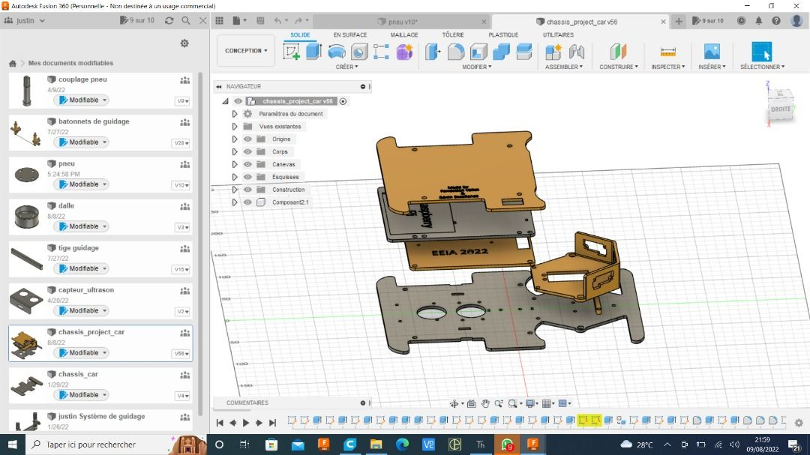
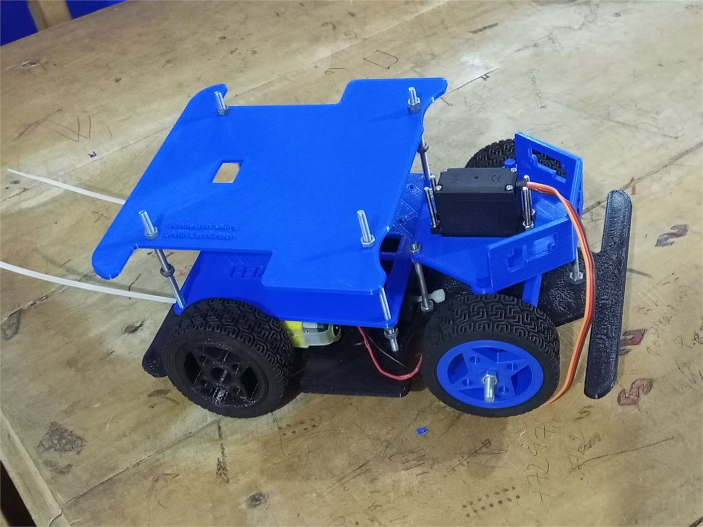
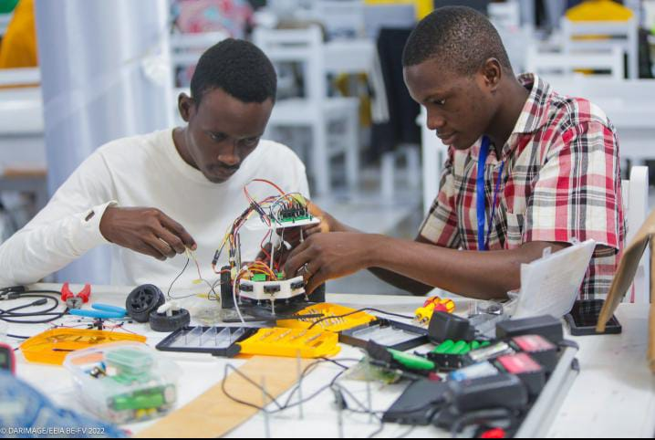
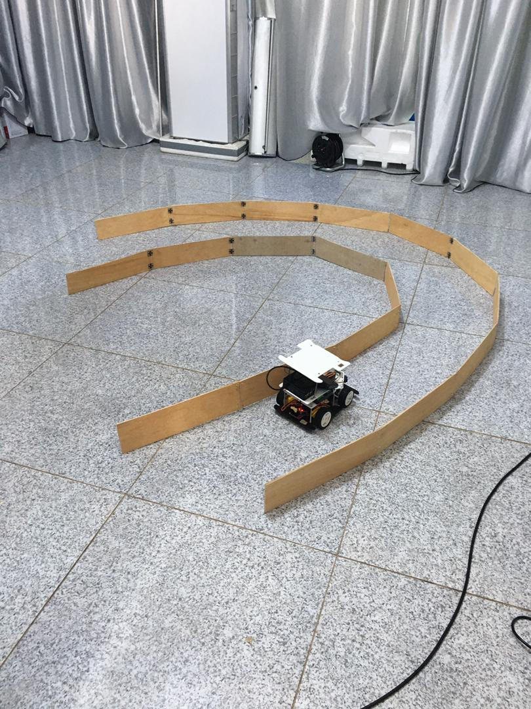
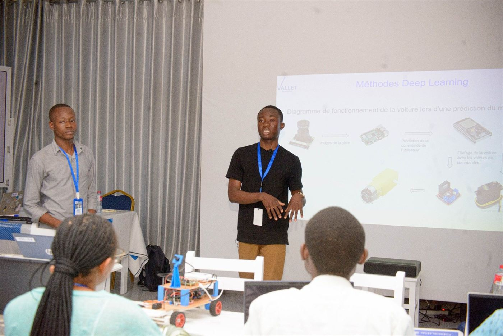
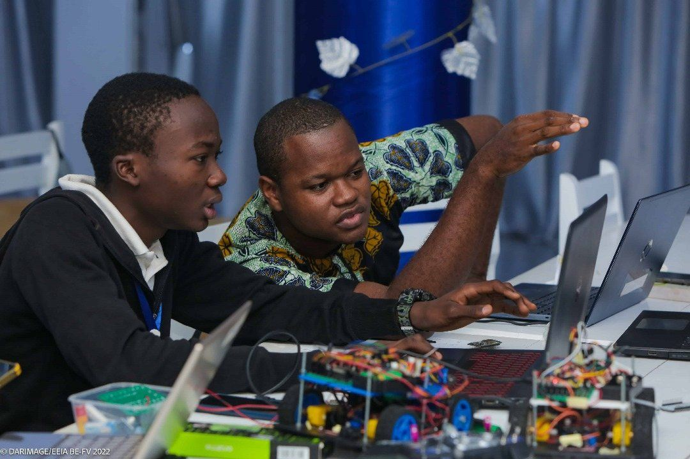

P / 04
Véhicule autonome -
Du kit à la conception de zéro
Autonomous vehicle -
From kit to built from scratch

Le point de départThe starting point
En 2021, je participe à la première édition de l'EEIA. Le projet de fin de session utilise une Donkey Car de Waveshare, un kit tout prêt. On l'assemble en suivant une notice, on l'entraîne, et elle roule.
In 2021 I took part in the first edition of the EEIA. The end-of-session project used a Waveshare Donkey Car, a ready-made kit. You assemble it by following the instructions, train it, and it drives.
Le problème : personne ne sait vraiment pourquoi elle roule. On n'a touché ni à la mécanique, ni à l'électronique, ni au modèle. C'est une boîte noire qui fonctionne.
The problem: nobody really knows why it drives. We touched neither the mechanics, nor the electronics, nor the model. It is a black box that works.
Monter un kit apprend à monter un kit. L'année suivante, je suis revenu avec une idée simple : pour comprendre une voiture autonome, il faut la refaire soi-même, de la première pièce jusqu'au réseau de neurones.
Assembling a kit teaches you to assemble a kit. The following year I came back with a simple idea: to understand a self-driving car, you have to rebuild it yourself, from the first part to the neural network.
Tout refaire nous-mêmesRedoing everything ourselves
Nous abandonnons le kit. Le châssis et les pièces sont dessinés en CAO puis imprimés en 3D. L'électronique est volontairement basique : une carte ESP32, un moteur à courant continu, un L293D pour le commander, une batterie et un récepteur Flipsky.
We dropped the kit. The chassis and parts are designed in CAD and then 3D-printed. The electronics are deliberately basic: an ESP32 board, a DC motor, an L293D to drive it, a battery and a Flipsky receiver.
Le résultat de cette première étape n'est même pas autonome : c'est une simple voiture radiocommandée. Mais nous savons expliquer chaque pièce, chaque fil et chaque ligne de code. C'est la base solide dont nous avons besoin pour la suite.
The result of this first step is not even autonomous: it is a simple radio-controlled car. But we can explain every part, every wire and every line of code. That is the solid foundation we need for what comes next.
Étape 1: La voiture apprend en nous imitantStep 1: The car learns by imitating us
Nous plaçons trois capteurs de distance à l'avant de la voiture : un à gauche, un au centre, un à droite. Ils mesurent en permanence l'espace disponible autour d'elle. Puis nous construisons un circuit en labyrinthe avec des barrières en bois.
We mount three distance sensors at the front of the car: left, centre and right. They continuously measure the free space around it. Then we build a maze track with wooden barriers.
La méthode tient en trois temps :
The method has three steps:
- Je conduis. Je pilote la voiture à la main dans le labyrinthe, plusieurs fois.
- Elle observe. À chaque instant, elle enregistre ce que voient les trois capteurs et ce que je fais aux commandes.
- Elle apprend. Un petit réseau de neurones cherche le lien entre les deux : « quand les capteurs voient ça, il faut faire ça ».
- I drive. I steer the car by hand through the maze, several times.
- It watches. At every instant, it records what the three sensors see and what I do on the controls.
- It learns. A small neural network finds the link between the two: "when the sensors see this, do that".
Le réseau apprend ainsi à prédire deux choses : à quelle vitesse avancer, et de combien tourner. Une fois installé dans la voiture, il la conduit seul dans le labyrinthe. Elle a appris à conduire en nous regardant faire.
The network thus learns to predict two things: how fast to go and how much to steer. Once loaded on the car, it drives through the maze on its own. It learned to drive by watching us.
Étape 2: Remplacer les capteurs par une caméraStep 2: Replacing the sensors with a camera
Les capteurs de distance ont une limite : ils détectent des murs, mais ne savent pas lire une route. Les années suivantes, nous passons donc à la caméra.
Distance sensors have a limit: they detect walls, but cannot read a road. In the following years we therefore moved to a camera.
Un Raspberry Pi 4 vient épauler l'ESP32, et les deux cartes se parlent en UART. Chacune son rôle : le Raspberry Pi regarde et décide, l'ESP32 commande les moteurs.
A Raspberry Pi 4 joins the ESP32, and the two boards talk over UART. Each has its job: the Raspberry Pi sees and decides, the ESP32 drives the motors.
Le circuit change lui aussi. Nous retirons les barrières et les remplaçons par de vraies pistes peintes sur une toile posée au sol, avec des panneaux de signalisation. La voiture ne longe plus des murs : elle doit lire la route.
The track changes too. We remove the barriers and replace them with real lanes painted on a canvas laid on the floor, with traffic signs. The car no longer follows walls: it has to read the road.
Nous entraînons alors deux modèles, tous deux installés sur la voiture :
We then train two models, both running on the car:
- Le premier conduit - il regarde l'image de la caméra et en déduit directement la vitesse et l'angle du volant.
- Le second lit les panneaux - il reconnaît la signalisation et adapte le comportement de la voiture.
- The first one drives - it looks at the camera image and directly infers the speed and steering angle.
- The second one reads the signs - it recognises the traffic signs and adapts the car's behaviour.
DémonstrationDemo
GalerieGallery






Résultats clésKey results
- Voiture entièrement conçue par nos soins : CAO, impression 3D, électronique et code. Aucun kit.
- Conduite autonome dans un labyrinthe, apprise en imitant un pilote humain.
- Passage réussi des capteurs de distance à la caméra.
- Deux modèles embarqués : un qui conduit, un qui lit les panneaux.
- Deux cartes qui se répartissent le travail : le Raspberry Pi voit et décide, l'ESP32 commande les moteurs.
- Projet repris comme support de formation à l'EEIA pendant trois éditions (2022 – 2024).
- Car fully designed by us: CAD, 3D printing, electronics and code. No kit.
- Autonomous driving through a maze, learned by imitating a human driver.
- Successful move from distance sensors to a camera.
- Two on-board models: one drives, one reads the signs.
- Two boards sharing the work: the Raspberry Pi sees and decides, the ESP32 drives the motors.
- Reused as the teaching platform at the EEIA for three editions (2022 – 2024).
Ce que ce projet m'a apprisWhat this project taught me
Refaire ce que le kit donnait déjà nous a pris beaucoup plus de temps. C'est exactement ce qui en a fait la valeur.
Rebuilding what the kit already provided took us much longer. That is exactly what made it valuable.
Aucune de ces étapes n'était prévue au départ. À chaque fois, c'est une limite qui a imposé la suivante : la radiocommande ne suffisait plus, alors sont venus les capteurs ; les capteurs ne savaient pas lire une route, alors est venue la caméra.
None of these steps was planned at the start. Each time, a limitation forced the next one: radio control was no longer enough, so the sensors came; the sensors could not read a road, so the camera came.
C'est là que j'ai compris ce qui me passionne aujourd'hui en Embodied AI : un modèle ne vaut jamais mieux que les capteurs qui le nourrissent et le matériel qui l'exécute.
That is where I understood what drives me today in Embodied AI: a model is never better than the sensors that feed it and the hardware that runs it.
Technologies
- Python
- TensorFlow
- OpenCV
- Fusion 360
- Impression 3D3D printing
- ESP32
- Raspberry Pi 4
- L293D · Moteur CCL293D · DC motor
- UART
- TinyML